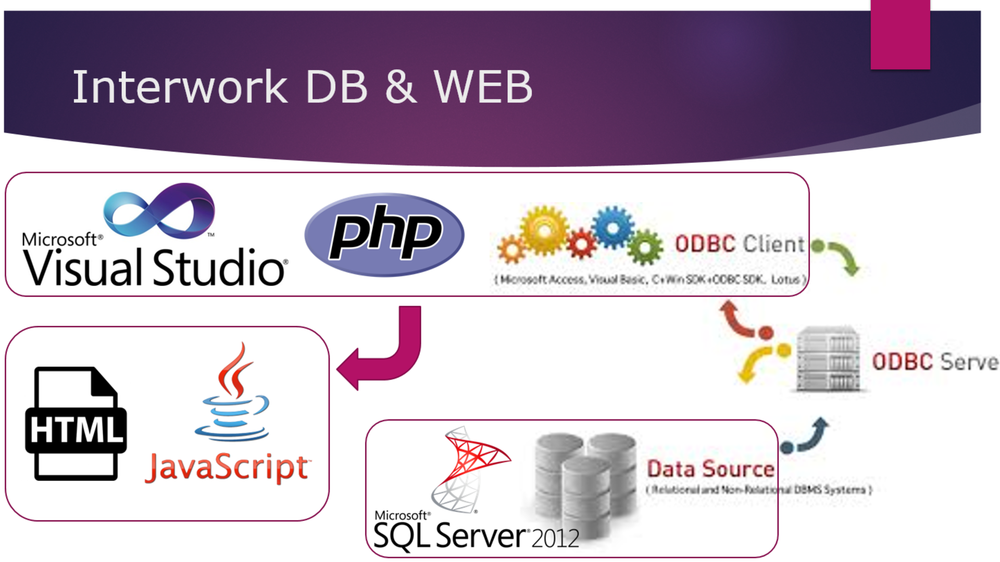
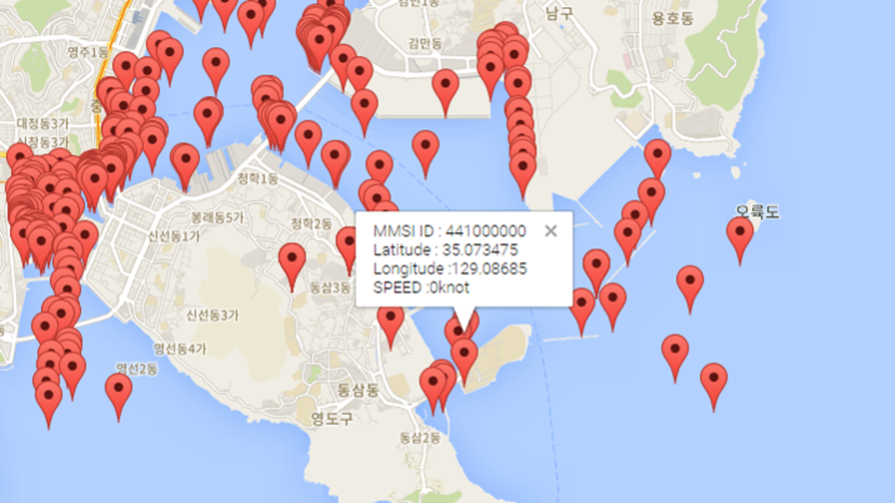
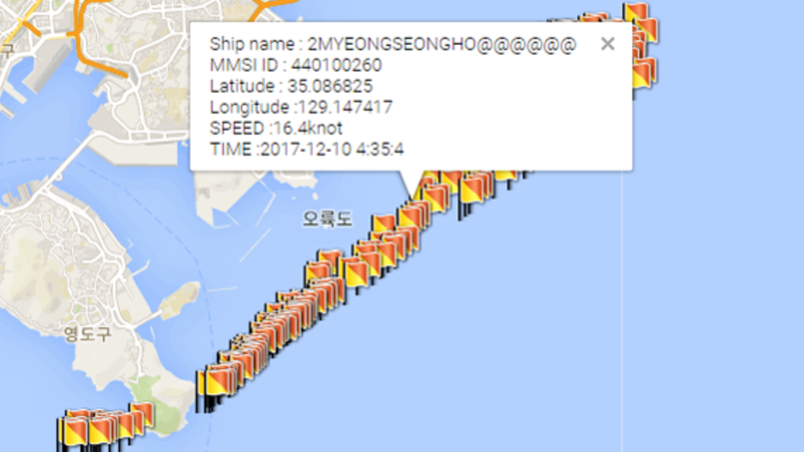
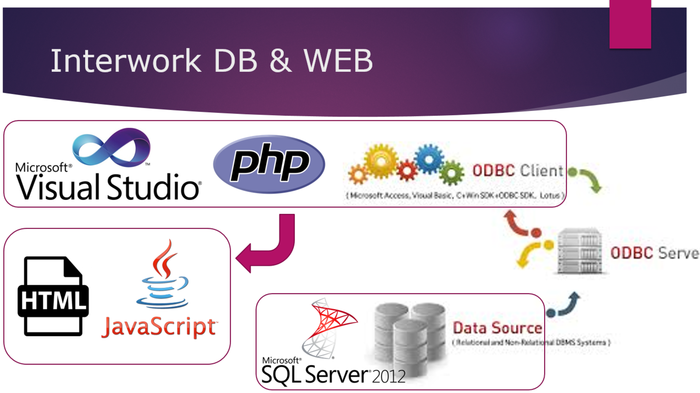
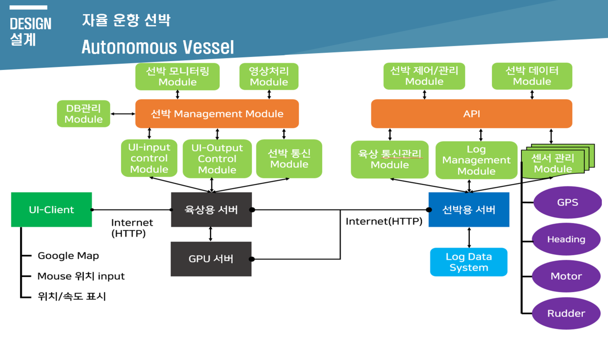
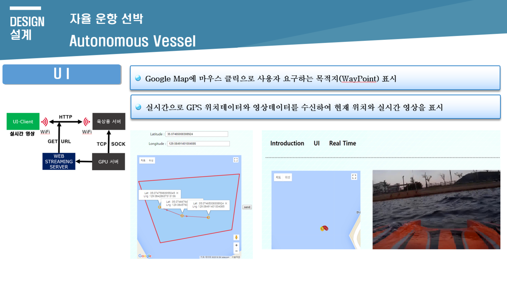
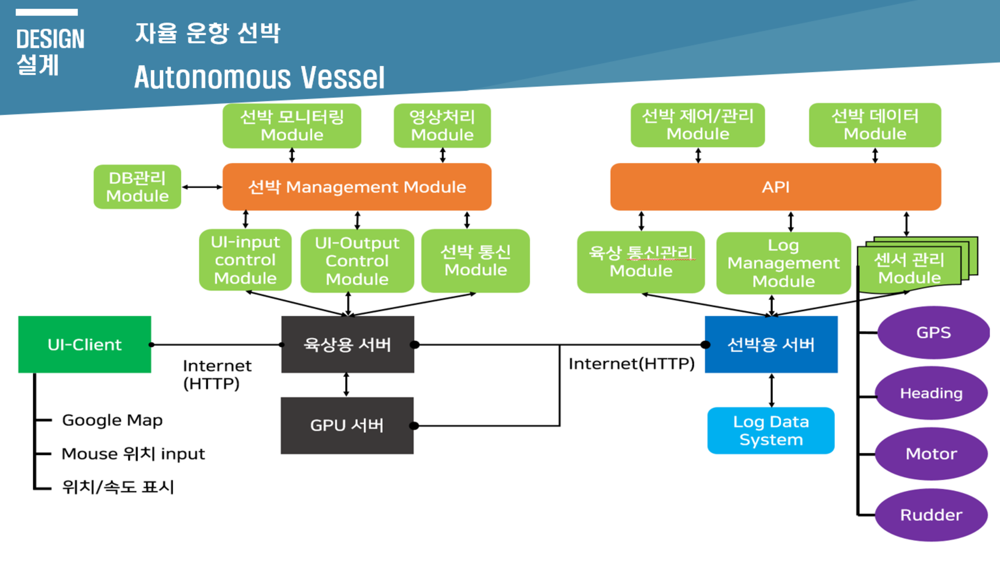

INTRO
안녕하세요! 이주현입니다.
RESUME
-
2013. 03 ~
- 한국해양대학교 4학년 재학중
- 제어자동화공학부 제어계측공학과
-
2018. 07 ~ 2018. 08
- NHN Technology Service
- UI개발 인턴
PROJECT
-
1. 부산항 주변의 선박 정보를 구글맵API를 사용하여 표시
2017. 09 ~ 2017. 12-

AIS-50N 장비로 선박의 AIS, GPS 정보와 MMSID, 선박이름 등의 선박정보를 얻어와 실시간으로 MS-SQL DataBase에 축적하고 이렇게 DataBase에 쌓인 각각의 선박 위치와 정보들을 사용하여 웹페이지상에 표시합니다.
-

MS-SQL과 PHP를 연동하여 DataBase에 계속 쌓여지는 데이터들을 사용합니다. DataBase 각 선박 Table의 가장 최근의 정보를 불러와 구글맵에 표시해줍니다.
-

선박의 MMS_ID값을 이용하여 검색하면 해당 MMS_ID에 만족하는 선박의 Data들을 DataBase에서 받아와 선박 행적이 구글맵상에 전부 표시됩니다.
-

-
2. 자율운항선박의 목적지를 구글맵API를 사용하여 WayPoint 설정과 선박 실시간 위치 및 실시간 영상화면 표시
2018. 03 ~ 2018. 06-

자율운항선박의 전체 시스템서버는 웹서버, 영상서버(python), 육상서버(Java), 선박서버(C++)로 구성됩니다.
-

사용자(UI-Client)가 목적지(경로/WayPoint) 설정을 할 수 있는 페이지와 사용자가 실시간으로 볼 수 있는 선박 현재위치와 영상화면을 보여줍니다.
-
